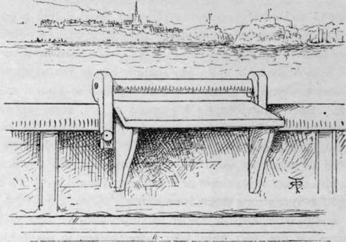
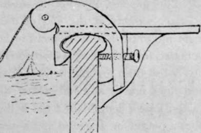
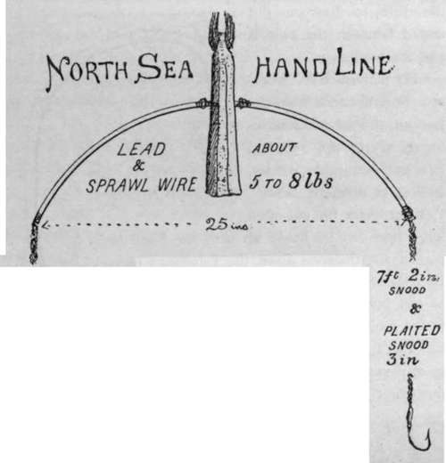
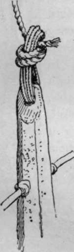

Chapter VIII. Sea Fishing From Yachts And Large Fishing Boats
Description
This section is from the book "Sea Fishing", by John Bickerdyke. Also available from Amazon: Sea Fishing.
Chapter VIII. Sea Fishing From Yachts And Large Fishing Boats
Yachts and other vessels are often so situated that a good deal of the more delicate kinds of sea fishing may be enjoyed from their white decks. For instance, when they are moored in a Scotch sea loch, or in any shallow bay or roadstead, it is as easy to fish from them with rod and line as from a small boat. But in this chapter I propose to give some account of the heavier tackle and methods by which fishing is carried on in deep water at some distance from the land, where it would be unsafe for small boats to venture. Under this heading also comes the subject of whiffing under sail, in which for large fish very strong tackle is necessary.
It has often been a matter of surprise to me that yacht-owners do not, as a rule, take more interest in sea fishing. Perhaps it is because their opportunities are so great that they fish so little. Just as there are many people who have lived in London all their lives without going to see St. Paul's or Westminster Abbey, and three generations of whom may dwell in England without any one of them making a pilgrimage to Shakespeare's resting-place. It is the country cousin and the globe-trotting American who sail straight away for Westminster and the banks of the Avon respectively. Certainly people who live on the seacoast fish less than occasional visitors.
The Prince of Monaco's great interest in the scientific side of sea fishing is well known. English yacht-owners might render national service if they would follow his example and avail themselves of their magnificent opportunities to make a thorough study of the natural history of sea fish and the best means of catching them. But then, those spotless planks ! What a sorry plight they are in after a night's hand lining for big conger, or when a shark five feet long has been hauled aboard ! Or imagine a few lugworms dropped about the deck and trodden in ! Why, the mere reading of such a thing is enough to turn some men faint—for does not the lugworm exude a bright yellow, ineradicable stain ? Having a weakness or a strong love myself—as you may please to consider it—for that perfect cleanliness, brightness, primness and order which are nearly always found on an English yacht, I would venture to suggest that those who take to sea fishing should have a piece of oiled canvas, tarpaulin, or even common oilcloth or linoleum, to protect the portion of the deck where the fish are being hauled on board.
Yacht Kail Protector.
Mr. Basil Field tells me that on a yacht from which he did a good deal of sea fishing, a means was devised of slightly mitigating the mess, and, in the case of hand lines, preventing injury to the rail of the vessel. The lines were hauled over a bracket-shaped ledge, on which the head of conger or other fish could be rested for a moment while the happy despatch was administered. It received the first of the mess. The size and exact shape of this arrangement are very much a matter of taste, but if fitted with a roller —as in the illustrations—to reduce the friction of the line, so much the better. It is best made of oak or other hard wood at least an inch thick, and is hung on to the rail just as a kettle-stand is hooked on to the fire-bars. In London I have noticed servants sitting on brackets so fixed for the purpose of cleaning the outsides of windows. For one man to work a line over it, the protector should be about three feet long and a foot or a little more wide. I have often thought that sheaves for lines to work on might be fixed on the rails of fishing boats with advantage. They would lessen the labour by decreasing friction, and save wear to both vessel and line.
I have no doubt that many yachtsmen and yachtswomen, particularly the latter, object to sea fishing because of the weight of the leads ordinarily used, and the handling of the wet lines. While it is of just such tackles that I have to write in this chapter, I would strongly urge every intending sea fisher, whether yachtsman or not, to give the very short boat rod and line described on pp. 28 and 231 a thorough trial. It will carry a two- or three-pound lead, and a sinker of that weight on a fine line is as effective as a much heavier sinker on a coarse hand line. I have never worked the thing out with any degree of accuracy, but I should say that a two-pound lead on the fine Nottingham twisted line will hold the bottom in a tideway where four or even more pounds of lead would be required on the ordinary hand line. Where this rod tackle can be employed the greatest objection to sea fishing is removed. If the necessary weights at the end of the line will allow a rather longer rod to be used from yacht or large fishing boat, so much the better, for with the very short rod it is not always easy to keep a lively fish from fouling the keel or sides of the vessel. With hand lines one is at a still greater disadvantage. Eleven feet is a convenient length for a rod if the weight does not exceed about a pound or a pound and a quarter. With reference to this point, it should be mentioned that, if the tackle is a paternoster in which the top hook is far above the lead, the rod must be of corresponding length. Otherwise a fish on the lowest hook could not be brought within reach of gaff or net. A big rubber ball or button at end of rod to rest on the hip, and the placing of the winch fittings some eight inches above it, make the handling of long rods more pleasant when heavy ends are used.
Yacht Rail Protector (sectional drawing).
In deep water, where at any time a large fish may be expected, it would be hardly wise to fish with the single gut paternoster recommended for small-boat work, unless whiting are the particular fish sought after, and then it is a decided advantage to use fine gut. Of course, the deeper the water, the less light there is at the bottom ; and in the gloom of fifteen or twenty fathoms fish are not so observant of coarse tackle as they would be in four or five fathoms. Out in open waters, too, there is generally more or less of a sea which diminishes the light below the surface.

Continue to:
- prev: Sea Fishing From Small Boats. Part 12
- Table of Contents
- next: Sea Fishing From Yachts And Large Fishing Boats. Part 2
Tags
fishing, hooks, bait, fishermen, spanish mackerel, mackerel fishing